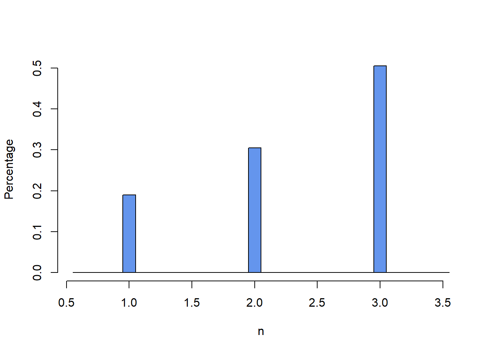
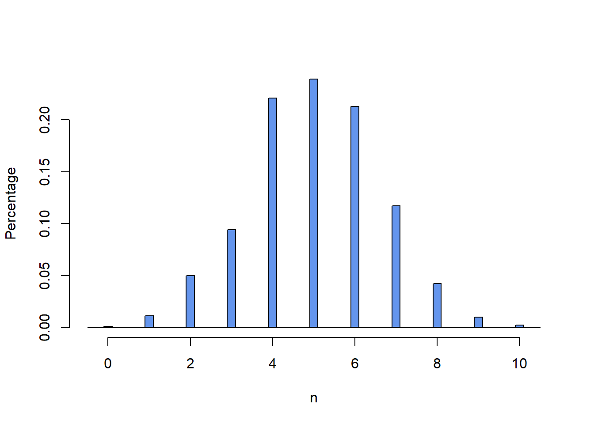
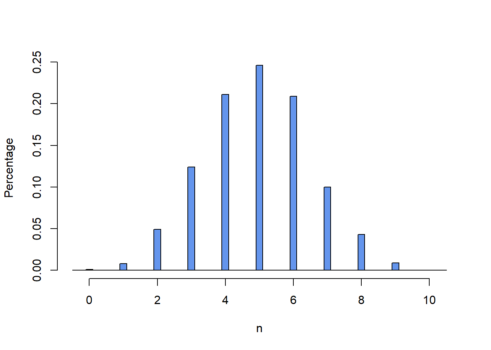
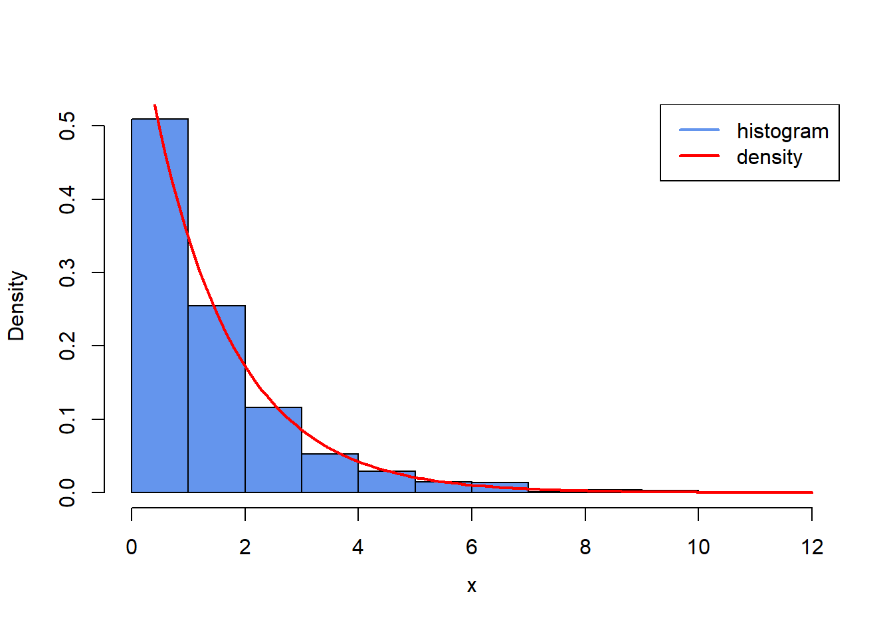
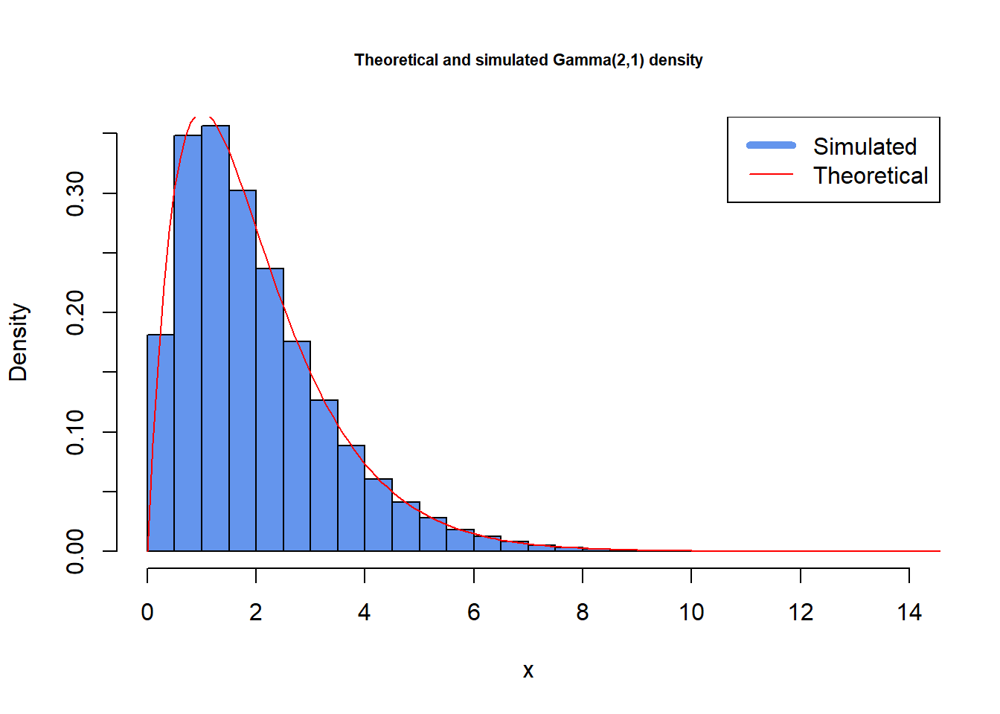
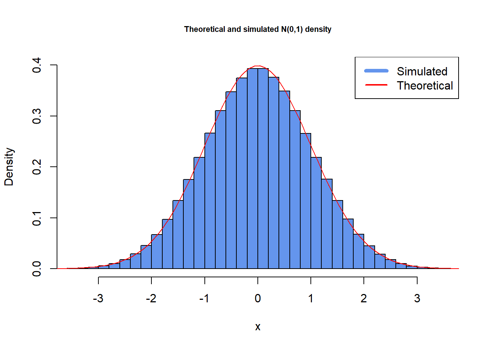
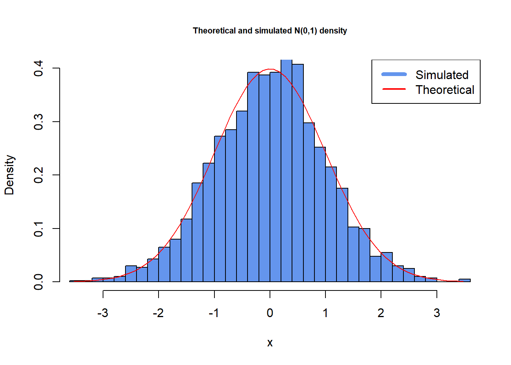

6 Introduction to Simulation
Simulation is essential for quantitative analysis. It is widely applied in estimation, hypothesis testing, equation solving, numerical computing, etc.
6.1 Seeding
Once the seed is known, the whole sequence of random variables can be reproduced. This property facilitates repetition of experimentation.
-
set.seed(seed)is used to specify the seed. - The current state of the random number generator is kept in the vector
.Random.seed. - If the random number generator is not initialized before generating pseudo-random numbers, R initializes it using a value taken from the system clock.
For example, run first:
Now run again:
runif(5)
#> [1] 0.3166092 0.6863317 0.4725650 0.2655531 0.6193426Setting seed back to 10086, we can reproduce results in the first frame:
You can also save the current state by:
RNG.state <- .Random.seed
runif(5)
#> [1] 0.3166092 0.6863317 0.4725650 0.2655531 0.6193426Now try to implement the following codes:
.Random.seed <- RNG.state
runif(5)
#> [1] 0.3166092 0.6863317 0.4725650 0.2655531 0.6193426In this way you reproduce the results.
6.2 Discrete Random variables
6.2.1 Simulate Discrete Random Variables
Suppose that we would like to simulate a discrete random variable \(X\).
- \(X\) takes values in {0,1,2,…}
- \(X\) has the CDF \(F\)
Suppose \(m\) is any number from the set \({0,1,2,...}\) such that it satisfies the following equation, given that \(U\) follows the uniform distribution over \((0,1)\).
\[ P(X=m)=F(m)-F(m-1)=P(F(m-1)<U \le F(m)) \]
Hence, the algorithm for simulating \(X\) is:
Simulate a random variable \(U \sim \text{Uniform}(0,1)\);
Find the minimal \(m\) such that \(F(m) \ge U\), that is,
\[ m = \min\{k \ge 0 : F(k) \ge U\} \]
- Set \(X = m\).
This algorithm vectorizes the function and takes advantage of the ellipsis …, since at times additional arguments need to be passed to the cumulative distribution function.
Discrete.Simulate <- function(F, size, ...) {
# F - Cumulative distribution function
# size - number of i.i.d. random variables to be simulated
m <- 0
U <- runif(size)
X <- rep(NA, size)
X[F(0, ...) >= U] <- 0
while (any(F(m, ...) < U)) {
m <- m + 1
X[(F(m, ...) >= U) & (F(m - 1, ...) < U)] <- m
}
return(X)
}For example, suppose that we would like to simulate 1000 i.i.d. discrete random variables whose probability density function is:
\[ p(x) = \begin{cases} 0.2, \text{ if } x = 1 \\ 0.3, \text{ if } x = 2 \\ 0.5, \text{ if } x = 3 \end{cases} \]
The corresponding cumulative distribution function is:
\[ F(x) = \begin{cases} 0.2, \text{ if } 1 \le x < 2 \\ 0.5, \text{ if } 2 \le x < 3 \\ 1, \text{ if } x \ge 3 \end{cases} \]
The following program makes use of Discrete.Simulate we just wrote to accomplish the task, and in addition produces the histogram:
# cumulative distribution function
F <- function(x) {
return(0.2 * ((x >= 1) && (x < 2)) + 0.5 * ((x >= 2) && (x < 3)) + (x >= 3))
}
# draw 1000 i.i.d. random variables whose CDF is F
set.seed(10086)
X <- Discrete.Simulate(F, 1000)
# histogram
h <- hist(X, breaks = seq(0.55, 3.55, 0.1), plot = FALSE)
h$density <- h$counts / 1000
plot(h, freq = FALSE, col = "cornflowerblue",
main = "", xlab = "n", ylab = "Percentage")
Simulate a binomial random variable \(X \sim \text{Binomial}(n, p)\).
- The density is given as
\[ p(k) = \mathbb{P}(X = k) = \binom{n}{k} p^k (1-p)^{n-k}, \text{for } 0 \le k \le n \]
- The CDF is given as
\[ F(x) = \sum_{k=0}^{ \lbrack x \rbrack} \binom{n}{k} p^k (1-p)^{n-k} \]
The following program draws 1000 random variables with the distribution Binomial(10, 0.5). Here, we see how ellipsis … renders Discrete.Simulate more flexible.
Alternatively, you can make use of the built-in function rbinom:
Y <- rbinom(1000, 10, 0.5)Compare the histograms:
h1 <- hist(X, breaks = seq(-0.5, 10.5, 0.2), plot = FALSE)
h1$density <- h1$counts / 1000
plot(h1, freq = FALSE, col = "cornflowerblue",
main = "", xlab = "n", ylab = "Percentage")
h2 <- hist(Y, breaks = seq(-0.5, 10.5, 0.2), plot = FALSE)
h2$density <- h2$counts / 1000
plot(h2, freq = FALSE, col = "cornflowerblue",
main = "", xlab = "n", ylab = "Percentage")

6.3 Inversion
6.3.1 Inversion Method
Thus far, we have discussed about simulation of random variables taking values in {0,1,…}. Next, we explain how to simulate random variable taking value in \(\mathbb{R}\).
- Suppose F is a cumulative distribution function on \(\mathbb{R}\) and U is a random variable uniformly distributed over \((0,1)\), then:
\[ X=F^{-1}(U) \]
where \(F^{-1}(\cdot)\) is an inverse function of \(F\).
Inversion method: As long as you can compute \(F^{-1}\), you can simulate a random variable using a uniformly distributed random variable.
Recall, that is \(X \sim \text{Exp}(\lambda)\), its cumulative distribution function is given by:
\[ F(x)= \begin{cases} 0, \text{ for } x < 0 \\ 1-e^{- \lambda x}, \text{ for } x \ge 0 \end{cases} \]
One can show that the inverse \(F^{-1}\) is given by:
\[ F^{-1}(y)=- \lambda ^{-1} \log{(1-y), 0 \le y \le 1} \]
When, \(y=1\), \(F^{-1}(y)=\infty\).
By means of \(- \lambda ^ {-1} \log{(1-U)}\), we can simulate the desired exponential distribution with intensity \(\lambda\). Observe that \(1-U\) also has uniform distribution over \((0,1)\). Hence, it is equivalent to use \(- \lambda ^ {-1} \log{(U)}\), which is more often used in practice.
Here is an example of drawing 1000 i.i.d. random variables with distribution exp(0.7).
Alternatively, we can also make use of the built-in function rexp, but an example is not provided.
Below is a histogram of the sample drawn with Exponential.Simulate. We also superimpose the theoretical density function (now, with code included!):
# 1. Create the Histogram
hist(X,
freq = FALSE, # Use density instead of frequency on y-axis
breaks = 15, # Adjust number of breaks for desired resolution
col = "cornflowerblue",
xlab = "", # Remove default x-label (add it later with mtext)
ylab = "Density",
main = "",
xlim = c(0, 12))
# 2. Superimpose the Theoretical Density Curve
curve(dexp(x, rate = 0.7), # Theoretical exponential density function
from = 0, # Start of the curve
to = 12, # End of the curve
col = "red",
lwd = 2, # Adjust line thickness
add = TRUE) # Add to the existing plot (histogram)
# 3. Add Labels and Title (using mtext for better control)
mtext("x", side = 1, line = 2.5) # Add x-axis label below the axis
mtext("Histogram of Exponential Sample and Theoretical Density",
side = 3, line = 1, outer = TRUE) # Title at the top margin
# 4. Add a Legend
legend("topright", # Position of the legend
legend = c("histogram", "density"), # Text for the legend
col = c("cornflowerblue", "red"), # Colors of the legend elements
lwd = 2) # Line width for the legend
6.3.2 Small Exercise
Consider the random variable With Gumble distribution \(X \sim \text{Gumbel}(0,1)\). The CDF is given by \(F_{X}(x)= \exp(- \exp(-x))\)
-
Now, suppose you want to simulate random draws from this distribution by use of the inverse transform method.
Derive the inverse transform \(F_{X}^{-1}(y)\) from this cdf. (Hint: solve \(\exp(- \exp(-F_{X}^{-1}(y)))=y\)). Write a function in R implementing the derived inverse transform.
Set the seed to 1234 and use 100 random draws of standard uniforms.
The first 4 draws will be:
-0.7766432 0.7458437 0.7022162 0.7495061
Solution
Note for the first part:
\[ \exp(- \exp(-F_{X}^{-1}(y)))=y \] \[ \Rightarrow F_{X}^{-1}(y)=-\log(-\log(y)) \]
Then, implementing the inverse transform:
6.4 Acceptance-Rejection
The inversion method works fine if we can find \(F^{-1}\) analytically. It becomes less feasible when \(F^{-1}\) does not admit a closed-form representation, although it is still possible to employ (time-consuming) numerical methods to approximate \(F^{-1}\).
Yet, there is another clever method that is often applicable, called the acceptance-rejection method.
Suppose we would like to simulate a random variable \(X\) whose cumulative distribution is \(F\), and
\[ F(x) = \int_{-\infty}^{x} f(t) \, dt \]
for the probability density \(f\).
The basic idea of the acceptance-rejection method is to find another distribution \(G\) with probability density function \(g\), such that:
A random variable with distribution \(G\) can be simulated using some efficient method (such as inversion method).
\(g\) is nonzero on the support of \(f\), that is, \(g(x) > 0\) as long as \(f(x) > 0\).
\(f/g\) is uniformly bounded, that is, \(c=\sup_{X} \frac{f(x)}{g(x)}<\infty\)
Once the forgoing conditions are satisfied, we shall say that \(g\) envelopes \(f\).
The acceptance-rejection algorithm for generating a random variable distributed as \(F\):
Generate a random variable \(Y\) distributed as \(G\)
Generate \(U \sim \text{Uniform}(0,1)\), which is independent from \(Y\)
If
\[ U \le \frac{f(Y)}{cg(Y)} \]
Then set \(X=Y\) (“accept”); otherwise go back to step 1 (“reject”).
In practice, choosing the distribution function \(G\) is a kind of “art”.
First of all, \(G\) should be chosen such that the corresponding random variable could be simulated efficiently.
Secondly, \(G\) should be chosen such that \(c=\sup_{X} \frac{f(x)}{g(x)}\) is as close to \(1\) as possible.
We consider the example of generating a random variable from the Gamma distribution. For1 \(k>1\) and \(\theta > 0\), the \(\text{Gamma}(k, \theta)\) density is given by:
\[ f(x)=\frac{\theta^{k}}{\Gamma{(k)}}x^{k-1}e^{-\theta x}, x>0 \]
To envelope \(f\), we choose the probability density function \(g(\cdot ; \lambda)\) of the \(\text{Exp}(\lambda)\), that is,
\[ g(x;\lambda)=\lambda e^{-\lambda x}, x>0 \]
Then:
\[ h(x;\lambda) = \frac{f(x)}{g(x;\lambda)}=\frac{\theta^{k}}{\Gamma{(k) \lambda}}x^{k-1}e^{(\lambda-\theta) x} \]
If \(h \ge \theta\), apparently \(\sup_{x>0}h(x;\lambda)=\infty\), so we require \(\lambda < \theta\) below. Given such \(lambda\), \(h(x;\lambda)\) is maximized at \(x_{\lambda}= \frac{k-1}{\theta - \lambda}\), and
\[ \sup_{x}\frac{f(x)}{g(x;\lambda)}=h(x_\lambda ; \lambda) = \frac{\theta ^ k (k-1) ^ {k-1}}{\Gamma{(k)} \lambda (\theta - \lambda) ^{k-1}} = e^{-1(k-1)} \]
As said above, we would like to choose the envelope density function such that the above supremum is as small as possible. In other words, we should choose \(lambda\) to minimize \(h(x_\lambda ; \lambda\). This is equivalent to maximizing \(\lambda (\theta - \lambda) ^{k-1}\) by optimizing the first order condition wrt. \(\lambda\). This leads to:
\[ \lambda = \frac{\theta}{k} \]
Plugging this back to the supremum, we get:
\[ c = \frac{k^k e^{-(k-1)}}{\Gamma (k)} \]
The code for the acceptance-rejection method for simulating a Gamma distributed random variable is.
### Auxiliary functions ###
gamma.pdf <- function(x, k, theta) {
return(theta^k * x^(k-1) * exp(-theta*x)/gamma(k))
}
exponential.pdf <- function(x, lambda) {
return(lambda * exp(-lambda*x))
}
Exponential.Simulate <- function(lambda, size = 1) {
V <- runif(size)
return(-1/lambda * log(V))
}
Gamma.Simulate <- function(k, theta, size = 1) {
lambda <- theta/k
c <- k^k * exp(-k+1) / gamma(k)
U <- rep(NA, size)
Y <- rep(NA, size)
X <- rep(NA, size)
Unaccepted <- rep(TRUE, size)
while (any(Unaccepted)) {
UnacceptedCount <- sum(Unaccepted)
U <- runif(UnacceptedCount)
Y <- Exponential.Simulate(lambda, UnacceptedCount)
Accepted_ThisTime <- Unaccepted[Unaccepted] &
( U <= ( gamma.pdf(Y, k, theta) / exponential.pdf(Y, lambda)/c ) )
X[Unaccepted][Accepted_ThisTime] <- Y[Accepted_ThisTime]
Unaccepted[Unaccepted] <- !Accepted_ThisTime
}
return(X)
}We test the function by simulating \(10^6\) i.i.d. random variables with distribution \(\text{Gamma}(2,1)\). Compare the histogram of the simulated data and the theoretical density:
set.seed(10086)
X <- Gamma.Simulate(2, 1, 10^6)
# histogram
hist(X, breaks = 30, freq = FALSE,
main = "Theoretical and simulated Gamma(2,1) density",
col = "cornflowerblue",
xlim = c(0, 14), ylim = c(0, 0.35),
xlab = "x",
cex.main = 0.7)
xticks = seq(0, max(X), 0.1)
lines(xticks, dgamma(xticks, 2, 1), col = "red")
legend("topright", legend = c("Simulated", "Theoretical"), lty = c(1, 1), lwd = c(5, 1), col = c("cornflowerblue", "red"))
6.5 Simulate Normals
If \(Z \sim N(0,1)\) then \(\mu + \sigma Z \sim N(\mu, \sigma^2)\). Hence, it suffices to have an algorithm for simulating a \(N(0,1)\) random variable, i.e., a standard normal variable.
We cover three ways of simulating a standard normal random variable:
Central limit theorem applied to a uniformly distributed random variable.
Acceptance-Rejection method with exponential envelope
Box-Muller algorithm
6.5.1 Simulate Normals: Using uniformly distributed random variable
Let \({U_i, i=1,2,...}\) be a sequence of i.i.d. random variables uniformly distributed over \((0,1)\).
Note that \(\mathbb{E}[U_i]=1/2\) and \(\text{var}[U_i]=1/12\) respectively. The classic central limit theorem entails:
\[ \frac{1}{\sqrt{n}}\sum_{i=1}^{n} \frac{U_i-\frac{1}{2}}{\sqrt{\frac{1}{12}}} \rightarrow N(0,1) \]
In particular, for some \(n\) a random variable \(Z=\sum_{i=1}^{n}U_i-n/2\) is approximately a standard normal distribution.
The resulting program is very simple - set \(n=12\):
Despite its simpleness, this method works well in fact.
set.seed(10086)
X <- Normal.Simulate(10^6)
# histogram
hist(X, breaks = 35, freq = FALSE,
main = "Theoretical and simulated N(0,1) density",
col = "cornflowerblue",
xlim = c(-3.5, 3.5), ylim = c(0, 0.4),
xlab = "x",
cex.main = 0.7)
xticks = seq(min(X), max(X), 0.1)
lines(xticks, dnorm(xticks, 0, 1), col = "red")
legend("topright", legend = c("Simulated", "Theoretical"), lty = c(1, 1), lwd = c(5, 2), col = c("cornflowerblue", "red"))
But it is possible to do better.
6.5.2 Simulate Normals: Acceptance-Rejection with Exponential Envelope
When \(Z \sim N(0,1)\), we let \(X=\lvert Z \rvert\). Suppose that \(S\) is a random variable which is independent of \(Z\) and uniformly distributed over \({-1,1}\), that is,
\[ \mathbb{P}(S=-1)=\mathbb{P}(S=1)=\frac{1}{2} \]
Then it is easy to check
\[ SX \sim N(0,1) \]
The probability density function of \(X\) is:
\[ f(x) = \begin{cases} \sqrt{\frac{2}{\pi}} \exp(-\frac{1}{2}x^2), \text{ if } x > 0 \\ 0, \text{ if } x \le 0 \end{cases} \]
Which is the half \(N(0,1)\) scaled by 2 to maintain a proper density.
We use the envelope density function:
\[ g(x) = \begin{cases} \exp(-x), \text{ if } x > 0 \\ 0, \text{ if } x \le 0 \end{cases} \]
Which is the probability density function of \(\text{Exp}(1)\) distribution. Easily,
\[ c=\sup_{x}\frac{f(x)}{g(x)}=\sup_{x}\sqrt{\frac{2}{\pi}} \exp \left( x-\frac{x^2}{2} \right) =\sqrt{\frac{2e}{\pi}} \]
This thus gives the following algorithm:
Draw \(V \sim \text{Uniform}(0,1)\) and set \(Y=-\log(V)\)
Draw \(U \sim \text{Uniform}(0,1)\), which is independent of \(Y\)
If \[ U \le \exp \left( -\frac{1}{2}(Y-1)^2 \right) \] then generate \(S\) uniformly distributed over \({-1,1}\) and return \(Z=SY\); Otherwise go back to step 1.
6.5.3 Simulate Normals: Box-Muller Algorithm
The Box-Muller algorithm is grounded on the following theorem:
Theorem 6.1 (Box-Muller transform) Let \(U\) and \(V\) be two independent random variables uniformly distributed over \((0,1)\). Define:
\[ X = \sqrt{-2 \log (U)} \cos (2\pi V), \text{ } Y = \sqrt{-2 \log (U)} \sin (2\pi V) \] Then \((X,Y)^{\top}\) is a standard bivariate normal random vector, i.e.,
\[ (X, Y)^{\top} \sim N\left( \begin{bmatrix} 0 \\ 0 \end{bmatrix}, \begin{bmatrix} 1 & 0 \\ 0 & 1 \end{bmatrix} \right) \]
Hence, we have the Box-Muller algorithm, which draws two independent standard normal random variables at a time:
Draw independent \(U \sim \text{Uniform}(0,1)\) and \(V \sim \text{Uniform}(0,1)\)
Set \(R=\sqrt{-2 \log(U)}\) and \(\Theta = 2\pi V\)
Return \(X=R \cos{\Theta}\) and \(Y=R \sin{\Theta}\)
The resulting program is very simple:
The histogram of 1000 standard normal random variables simulated using Box-Muller transformation:
set.seed(10086)
X <- BoxMuller(1000)
# histogram
hist(X, breaks = 35, freq = FALSE,
main = "Theoretical and simulated N(0,1) density",
col = "cornflowerblue",
xlim = c(-3.5, 3.5), ylim = c(0, 0.4),
xlab = "x",
cex.main = 0.7)
xticks = seq(min(X), max(X), 0.1)
lines(xticks, dnorm(xticks, 0, 1), col = "red")
legend("topright", legend = c("Simulated", "Theoretical"), lty = c(1, 1), lwd = c(5, 2), col = c("cornflowerblue", "red"))
6.6 Monte Carlo Integration
6.6.1 Monte Carlo Integration - a brief introduction
Suppose that you want to compute the integral:
\[ I = \int_{a}^{b} f(x)dx \]
It is not always possible to calculate it analytically. In such cases, we can use Monte Carlo by noting that:
\[ I=(b-a)\mathbb{E}[f(U)], \space U \sim \text{Uniform}(a,b) \]
Let \(U_i : i=1,2,...\) be an i.i.d. sequence of random variables uniformly distributed over \((a,b)\). The strong law of large numbers implies:
\[ \frac{b-a}{n} \sum_{i=1}^{n}f(U_i) \xrightarrow{a.s.}I \text{, as }n \rightarrow \infty \]
Where \(\xrightarrow{a.s.}\) means almost sure convergence.
6.6.2 Monte Carlo Integration - the code
Hence, you may pick a large \(n\), draw i.i.d. \(U_i \sim \text{Uniform}(a,b)\), and use \(\frac{b-a}{n} \sum_{i=1}^{n}f(U_i)\) as an approximate of \(I\). The following function does this:
6.6.3 Monte Carlo Integration - examples
Set seed to 10086 and consider two examples.
Example 1: \(\int_{-1}^{1} \frac{1}{1+x^2}dx\) with the accurate value \(\frac{\pi}{2} \approx 1.570796\). We get:
set.seed(10086)
MonteCarlo.Integration(function(x) 1/(1+x^2), 100, -1, 1)
#> [1] 1.589363Example 2: \(\int_{0}^{1} \arctan{x}dx\) with the accurate value \(0.4388246\).
6.6.4 Small Exercise
Suppose you want to measure the area of the unit circle via the Monte Carlo integration using the following steps:
Simulate \(U \sim U(0,1)\) and \(V \sim U(0,1)\) to obtain \(R^2 = U^2 + V^2\), \(100\) times.
Define a function \(f(U,V) = 1_{ \left\{ U^2+V^2<1 \right\} }\): \(1_{\text{Condition}}\) is an indicator function that returns \(1\) if the condition is true and \(0\) otherwise.
Implement the monte carlo integration of the unit circle in R using the formula \((b-a)E[f(U)]\).
Now, note that your result likely is somewhat lower than the area of the unit circle. Why is that? (Hint: try to multiply your obtained result by 4).
Try to increase the number of standard uniform draws used to approximate the area.
Note that you should have successfully approximated a famous mathematical constant.
Solution
For \(0<k<1\) it’s still possible to employ the acceptance-rejection method, but we need another envelope probability density function, which we don’t elaborate on here.↩︎